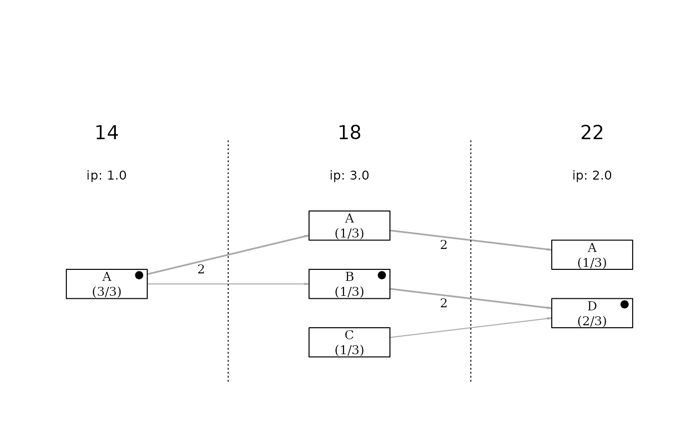
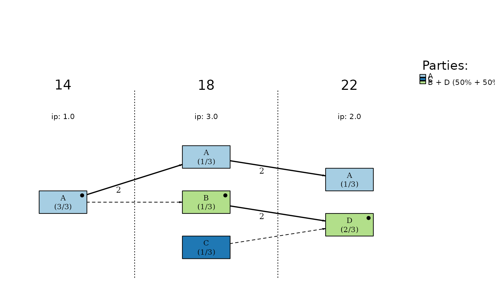
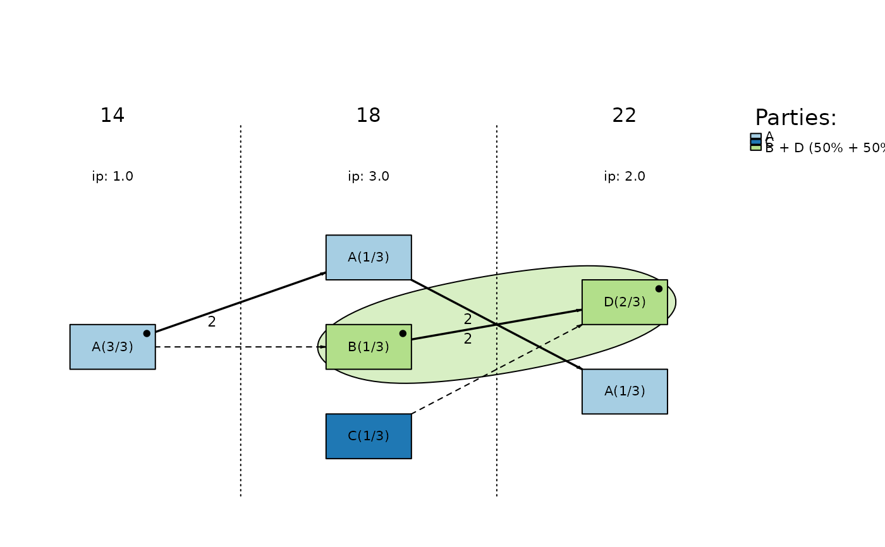
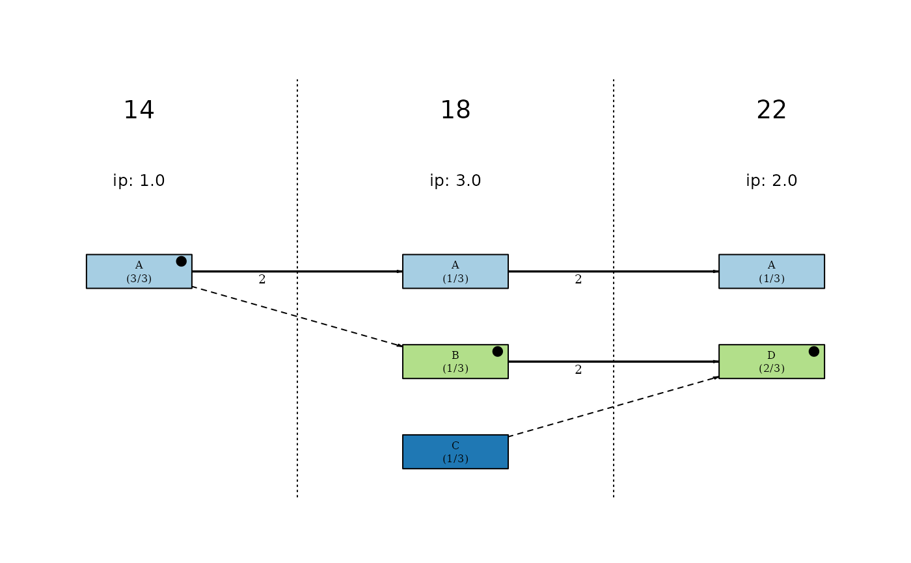
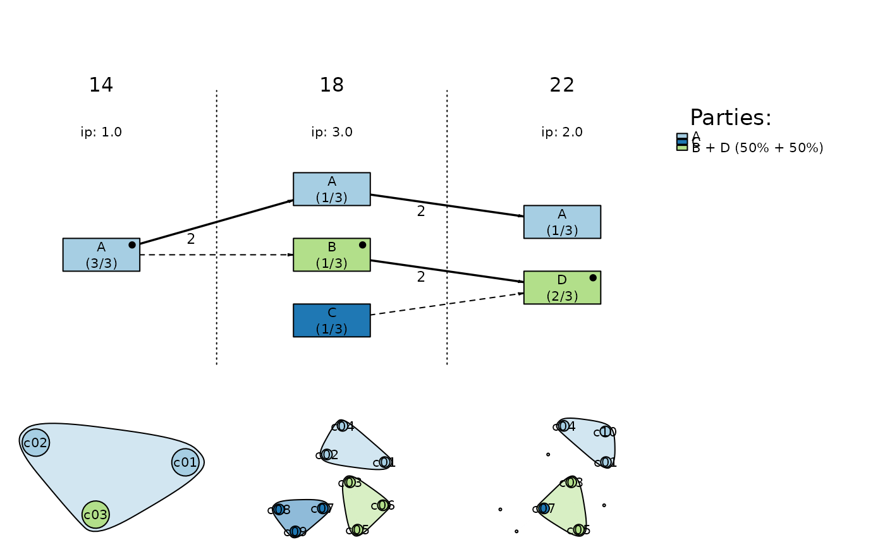
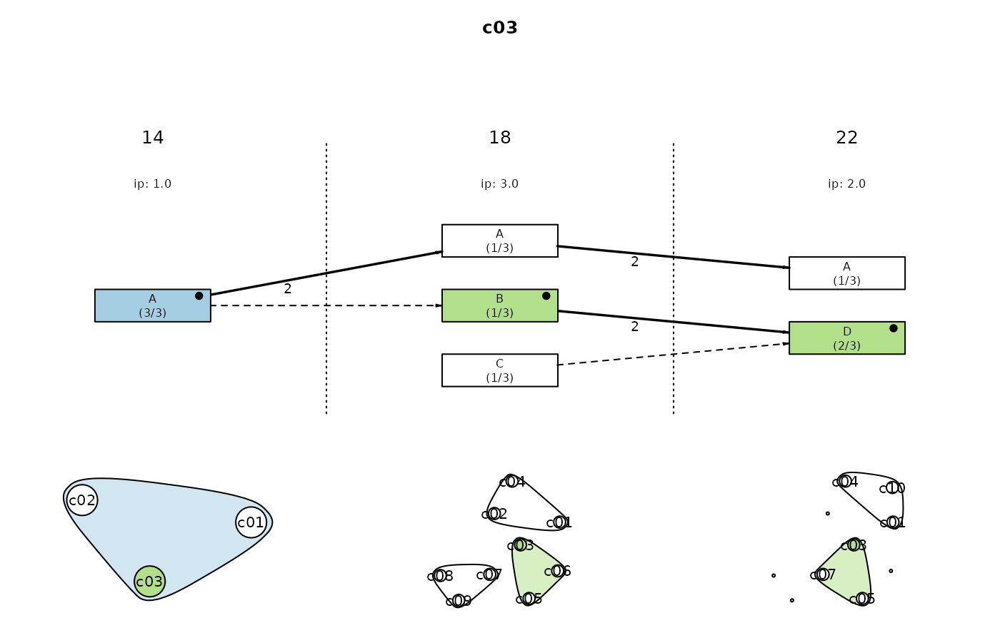
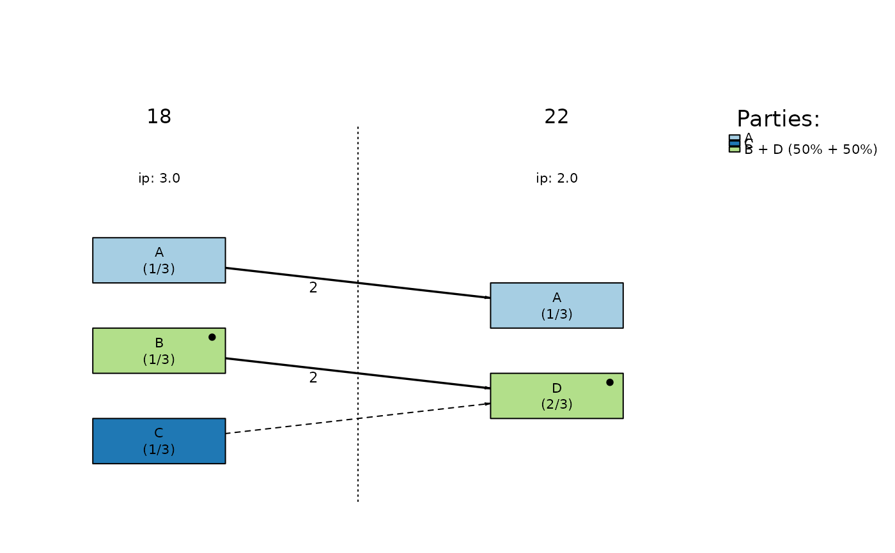
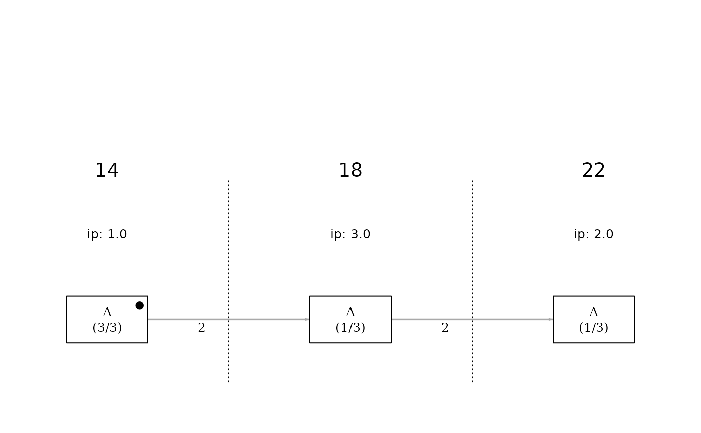
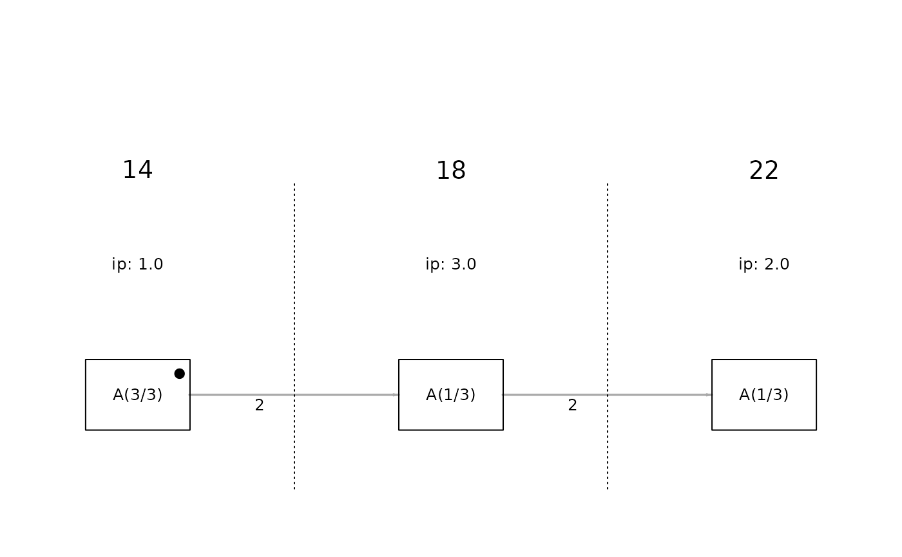

Visualizes the continuity of candidacies over time, illustrating the evolution of the local party system through a network of candidate lists linked by candidate transitions across elections.
Usage
plot_continuity(
netdata,
mark = NULL,
separate_groups = FALSE,
lists = c("all", "elected"),
elections = NULL,
show_elections_between = TRUE,
parties = NULL,
links = c("continuity", "all"),
order_lists_by = c("votes", "seats"),
order_groups_by = c("elections", "votes", "seats"),
personalization = FALSE,
coloured = TRUE,
group_colours = c(),
show_legend = TRUE,
show_candidate_networks = FALSE,
plot_title = NULL,
...
)Arguments
- netdata
A named list created by
prepare_network_datacontaining the continuity network data. Alternatively, a data.frame can also be used, but is recommended only for quick or exploratory plotting of a basic continuity diagram.- mark
Character or character vector. Specifies which type of group should be visually distinguished in the diagram. Options include "parties", "cores", or c("candidate", "candidate name"). Defaults to NULL (no group highlighting). See Details and Examples for usage.
- separate_groups
Logical. If TRUE, groups of candidate lists are plotted in separate rows on the y-axis, improving clarity for group-level analysis. See Details.
- lists
Character. Candidate lists to be included in the plot. Either "all" (default) or "elected" to include only lists with at least one elected candidate (councillor).
- elections
Character or character vector. Filters the range of elections to be shown in the diagram. By default (
NULL), all available elections in thenetdataobject are included. You can specify: individual elections (e.g.,"1994", "2022"), ranges (e.g.,"2002-","-2010","1994-2010") or combinations of both (e.g.,"-1998, 2002, 2003.11, 2018-"). See Details and Examples for more information and usage.- show_elections_between
Logical. If TRUE (default), the plot includes all election periods between those selected via the
electionsargument, even if no candidate lists are present for those years because of the selection. This is especially useful when visualizing groups that did not run in every election - empty columns help preserve the visual continuity of timelines. Setting this to FALSE will omit those gaps. Recommended to keep TRUE when analyzing individual groups or when filtering only a subset of elections.- parties
Integer or character vector. Filters the so-called political parties, i.e., groups of candidate lists identified via community detection (see
prepare_network_data). Use this to display only selected parties, for example:parties = c(1, 3, 5). Party IDs can be found in the network data object undernetdata$parties$node_attr$vertices.- links
Character. Determines which links between candidate lists are plotted.
"continuity"(default) includes only connections between adjacent elections."all"includes links across any elections. This option is mainly useful when analyzing a selection of non-consecutive elections.- order_lists_by
Character. Sorts candidate lists within each election vertically. Options are: "votes" (default) or "seats". If
separate_groups = TRUE, sorting is applied within each group.- order_groups_by
Character vector. Used when
separate_groups = TRUE. Specifies the order of groups on the y-axis. Options: "elections", "votes", "seats", or "none". Multiple criteria can be provided in order of priority. To display groups in the order they are listed innetdata, use "none" or NULL. See Details for more information.- personalization
Logical. If TRUE, appends the coefficient of variation of preferential votes to the candidate list name. See Details for interpretation. Default is FALSE.
- coloured
Logical. Specifies whether candidate lists of different groups should be distinguished in colour (TRUE, default) or in grayscale when using the
markargument. Ignored ifgroup_coloursis provided.- group_colours
A character vector of colour values (e.g., hex codes or R colour names). Custom colours for marked groups. To maintain the same colours when displaying the diagram repeatedly, the number of colours (elements in the vector) must match the number of all identified groups, even if only a subset is shown. If NULL (default), the function will select the most appropriate colour palette.
- show_legend
Logical. Whether to display the legend (only applies when groups are marked). Default is TRUE.
- show_candidate_networks
Logical. If TRUE, an additional bottom panel is drawn, displaying a snapshot of the candidate-candidate network for each selected election. Each snapshot shows the network structure of candidates running in that specific election, contextualised by candidates who appeared in previous selected elections (as determined by the
electionsargument). Default is FALSE. See Details for more information.- plot_title
Character. Title displayed above the diagram. Default is NULL (no title).
- ...
Additional technical arguments passed internally, primarily for testing and improving the diagram display.
Details
Recommendation about using the raw data
For more advanced use, especially when identifying political parties or
analyzing system stability, it is recommended to first process the election
data using prepare_network_data. This function builds the
necessary network structures and attributes also for groups of candidate lists
that sometimes takes few minutes but you would need to do it only once. Using
raw data frames as input in case of plot_continuity is intended mainly
for quick and basic visualizations, without the group identification.
Usage of mark argument
A central feature of this function is the mark argument, which allows highlighting
of specific groups in the diagram. The most common options are "parties" or
"cores", referring to communities of candidate lists detected through community
detection.
When using mark = "parties" or "cores", you can further specify which groups
to highlight visually by adding their IDs (e.g., mark = c("parties", 2, 5)).
Party and core IDs are available in netdata$parties$node_attr$vertices
or netdata$cores$node_attr$vertices.
You can also highlight individual candidates by using mark = c("candidate",
"Candidate Name"), which will highlight the candidate lists on which the person
has appeared in colours of the candidate lists' groups.
You may combine the mark argument with group separation, and filtering.
Groups separation
The separate_groups argument improves diagram readability by placing each
group on its own line. This is particularly helpful when analyzing continuity,
volatility, and structural reproduction of the party system.
Elections filtering
Filtering elections using the elections argument is useful when dealing with
many elections that may not fit into a single figure in a report or publication.
In such cases, you can split the diagram into two parts (e.g., one with
elections = "-2002" and one with elections = "2002-", so that the links
between the elections adjacent to the 2002 elections are not lost) and stack
them vertically.
When selecting non-consecutive elections, it is strongly recommended to set
links = "all" to retain meaningful connections between candidate lists
across time. Otherwise, continuity may appear broken due to missing
intermediate elections.
For a meaningful continuity analysis, include at least two elections.
About order_groups_by argument
The order_groups_by argument is relevant only when separate_groups = TRUE.
You can sort groups by "elections", "votes", "seats", or "none" (the
original order in the data). If multiple criteria are provided (e.g.,
c("votes", "elections")), they are applied in priority order. The criteria
of "votes" and "seats" will sort the groups according to the value of
the given criterion. The "elections" criterion ranks groups based on their
participation in the most recent election and falls back recursively to earlier
ones in case of ties.
About personalization argument
The personalization option appends the coefficient of variation of preferential
votes to the name of each candidate list. A lower value may indicate a party's
electoral program voting, while higher variability may suggest a personalized
choice (for example, where voters support a prominent individual rather than
the whole candidate list). In the case of a limited number of preferential votes,
such an interpretation may be debatable and should therefore be used with caution.
Candidate network snapshots
When show_candidate_networks = TRUE, the plot includes an additional bottom
panel visualising candidate-candidate network snapshots for the selected
elections.
Each snapshot displays the network of candidates running in that particular election, together with candidates who appeared in earlier selected elections. Candidates in the focal election are drawn as larger nodes, while candidates from previous elections who did not run in that election are shown as smaller background nodes. This allows users to inspect continuity, connectivity, and the gradual formation or dissolution of clusters, as well as other structural changes across electoral periods, even when the selected elections are not consecutive.
If grouping information is available (e.g., community-detected parties or cores), node colours represent the long-term group affiliation of each candidate. Node boundaries, however, reflect the candidate lists used in the specific election represented in each snapshot. This combination helps reveal whether individual candidate lists are internally cohesive or composed of candidates from different longer-term groupings, potentially indicating later fragmentation (splits), mergers, or realignments in subsequent elections.
The candidate network snapshots can also be combined with
mark = c("candidate", "<name>"), which highlights the chosen candidate across
the continuity diagram and in all snapshot networks. Marking works both with
and without identified groupings.
The snapshots do not require the selected elections to be consecutive; if non-adjacent elections are included, the panel still displays one snapshot per election based on the available data.
Additional arguments (...)
The ... argument is primarily intended for internal tuning and advanced use.
It can be used to pass optional control parameters that are not part of the
main user-facing interface and are therefore not listed in the formal
argument list. These settings may change between versions and should
generally not be needed in typical workflows.
One such option is do_not_print_to_console = TRUE, which suppresses
informational messages printed by plot_continuity() (for example, list
of detected groups). This can be useful in automated scripts, examples,
or pkgdown documentation where repeated console output would be distracting.
Note
The mark = "cores" option is currently experimental, as the conversion
of their definition into code is still being sought, and may be subject to
change in future versions. Use with caution.
Examples
data(sample_data, package = "lpanda")
# basic continuity diagram
plot_continuity(sample_data)

# preparing network data
netdata <- prepare_network_data(sample_data, verbose = FALSE, quick = TRUE)
# highlighting groups
plot_continuity(netdata, mark = "parties")
#> Parties: 3
#> 1: A (100%)
#> 2: C (100%)
#> 3: B + D (50% + 50%)

plot_continuity(
netdata,
mark = c("parties", 3),
order_lists_by = "seats",
do_not_print_to_console = TRUE
)

plot_continuity(
netdata,
mark = "parties",
separate_groups = TRUE,
show_legend = FALSE,
do_not_print_to_console = TRUE
)

# candidate network snapshots coloured by groups and bordered by lists
plot_continuity(
netdata,
mark = "parties",
show_candidate_networks = TRUE,
do_not_print_to_console = TRUE
)

# candidate tracking
plot_continuity(
netdata,
mark = c("candidate", "c03"),
show_candidate_networks = TRUE,
do_not_print_to_console = TRUE
)

# filtering elections and parties
plot_continuity(
netdata,
mark = "parties",
elections = "18-",
do_not_print_to_console = TRUE
)

plot_continuity(
netdata,
elections = c(14, 22),
links = "all",
show_elections_between = FALSE
)

plot_continuity(netdata, parties = 1)
